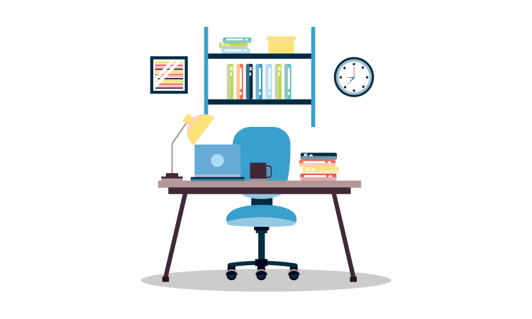

Телефон
Одна колонка и крупные зоны нажатия.
Размер окна меняется, а содержание остаётся удобным. Разметка построена по принципу mobile first.
Посмотреть возможности
Одна колонка и крупные зоны нажатия.
Свободное место используется рационально.
Содержимое растягивается умеренно.